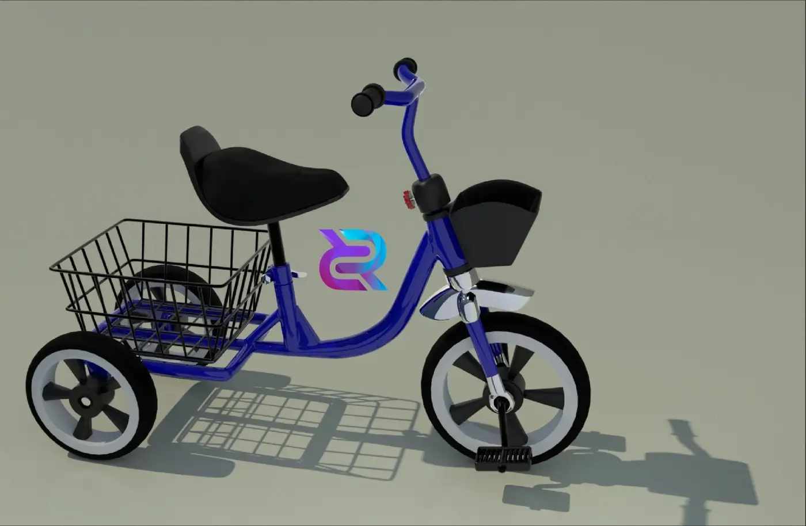
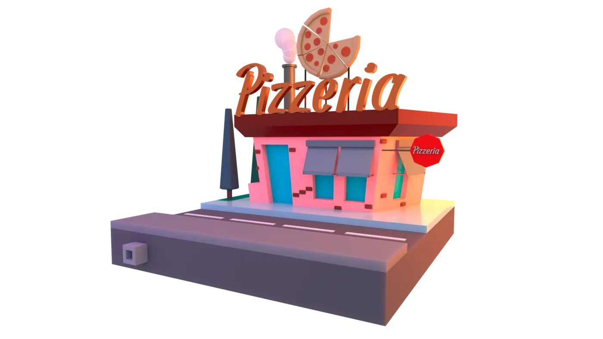
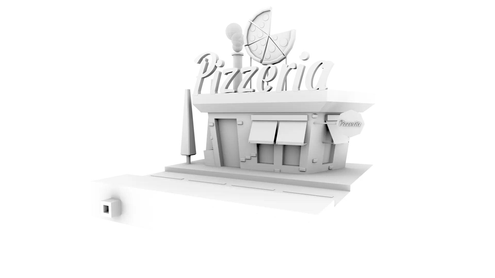
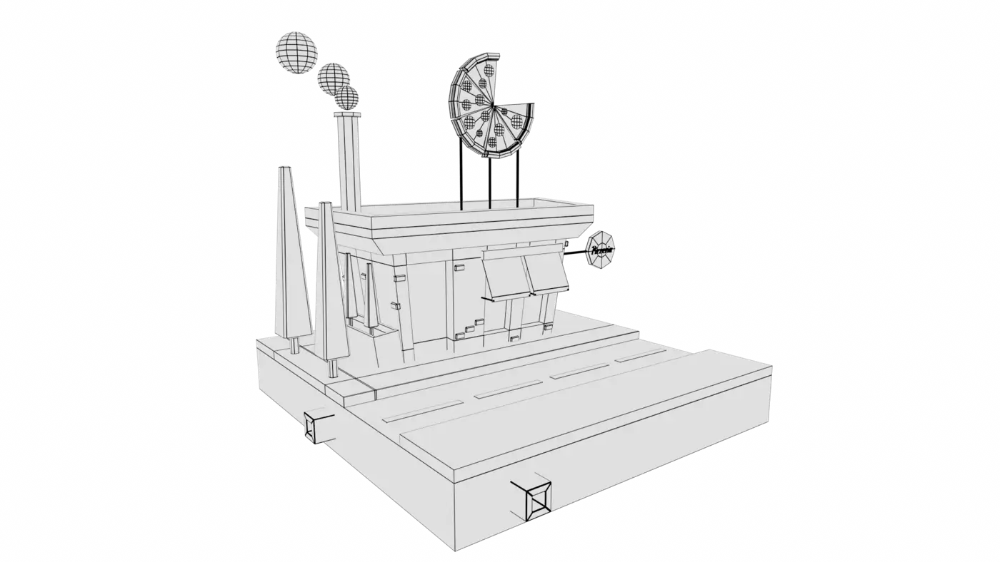

Section with images showing different organic models created by me, grouped by project, with a simple and concise description.
Children's Tricycle
Blue tricycle. It has a black padded seat, black handlebar grips, and two baskets: a
wire basket behind the seat and a plastic basket at the front. The wheels are white
with black details in the center, and the pedals are black. The tricycle casts a
distinct shadow on the surface.
Practice model based on an image, using only
Maya 3D and Arnold lighting. Retouched with Photoshop. The textures used are from
the Arnold program.

Pedal car
Features a tubular structure that forms the chassis. The tires are large and black,
with silver spokes, giving it the look of a vintage car. The steering wheel is
wood-colored with four arms extending toward the center. There is also an orange
seat. The interior was modeled in detail, with the structure of the brakes and
steering.
Practical model in Maya 3D. The images show work in progress on a
pedal car, modeling
the entire interior and bodywork separately.
Toon-style pizzeria
The scene depicts a 3D-modeled pizzeria in a low-poly style. It features a color
scheme combining pink and turquoise, with a prominent sign reading “Pizzeria” in
large brown letters above the roof. Above the sign is a stylized representation of a
slice of pizza.
Practice creating mini scenes. Lighting applied with Maya and
Arnold. Post-production
retouching in Photoshop.




Christmas stocking
The image shows a personalized Christmas stocking on a dark blue background,
radiating a festive and cozy atmosphere. The background provides a striking contrast
to the bright colors of the sock and helps it stand out even more.
Practice creating fur and fabric textures.
To achieve a realistic coat, a
combination of short and long strokes was used, focusing on the points where light
and shadow fall, while for the fabric, different techniques were explored in Maya
3D.
Commission for the company Torque Engineering
In the foreground, we see a hand covered with a work glove, holding a safety card
with the inscription “DO NOT OPERATE.” The card shows a photograph of a person and
additional text. The hand appears to be manipulating or interacting with an
electrical control panel.
The control panel is light gray and divided into sections. On the left, there is a
switch with status indicators labeled “ON,” “TRIP,” and “OFF.”
These models were
created for use in an animation about safety in offices and mining
work sites.
You can visit the HIGHLIGHTED section to learn more about this project.

3D model of a warehouse.
This model was designed for a virtual tour and dissection. The client requested a high level of detail, including sliding doors, natural lighting, colors and materials similar to the real thing, and even the screws were modeled.
Photographs and plans were used to ensure the correct measurements. The client wanted something more cinematic, so we opted to use an animation created in Maya 3D instead of CAD.